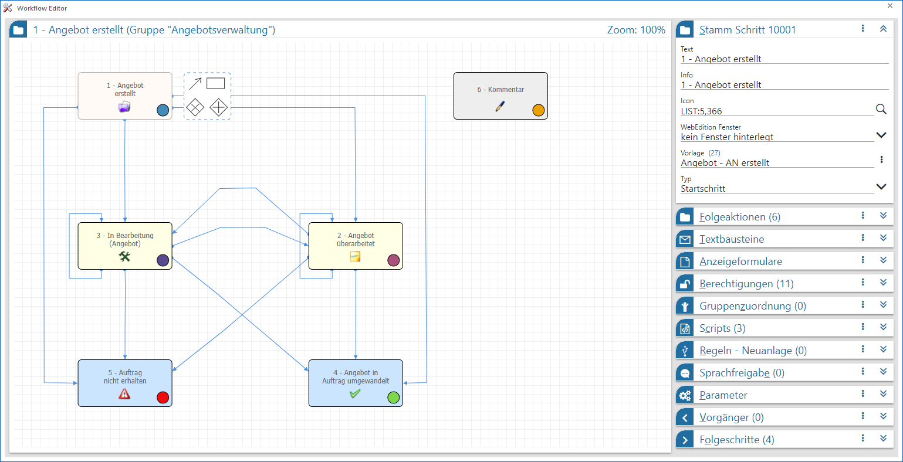
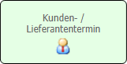
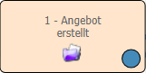
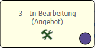
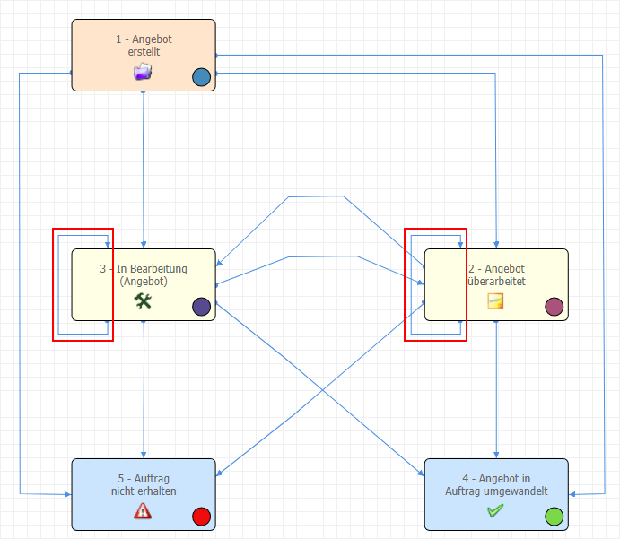
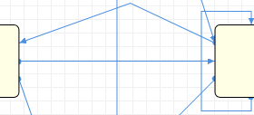
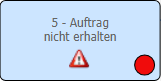
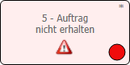
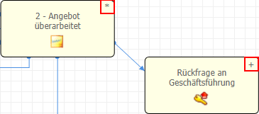
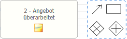

In der Workflowübersicht wird der gesamte CRM-Prozess des ausgewählten Startschritts angezeigt und kann überarbeitet werden.
Hinweis
In der Workflowübersicht steht eine Mehrfachauswahl von Objekten zur Verfügung. D.h. es kann per Maus ein Rahmen um die Objekte gezogen oder per SHIFT + linke Maustaste einzelne Objekte ausgewählt werden. Diese markierten Objekte können in der Folge "gebündelt" verschoben oder gelöscht werden.

In der Workflowübersicht werden die einzelnen Objekte des Prozesses, samt deren Verbindungen untereinander, grafisch (in unterschiedlichen Farben) dargestellt. Jedes Objekt kann dabei immer nur im Kontext eines Workflows existieren. Sollte ein z.B. Workflowschritt in unterschiedlichen CRM-Prozessen benötigt werden, so kann mit sogenannten Musterschritten gearbeitet werden (siehe auch Definitionsbereich - Stamm).
ü

- Aktionsschritt
ü

- Startschritt (Workflow bzw. CRM-Prozess)
ü

- WorkflowschrittHinweis
Workflowschritte können in einem Workflow für den weiteren Prozess auch auf sich selber verweisen, d.h. es können Ablaufschleifen gebildet werden.
Beispiel

ü

- Kanten
ü - Nebenschritt
Bei einem Nebenschritt
handelt es sich um einen Schritt, der grundsätzlich an jeder Stelle des
Workflows ausgeführt werden kann.
Die Besonderheit des Nebenschritts ist
dabei, dass dieser den aktuellen Status des Workflows nicht verändert, d.h. der
Workflow steht noch immer in jenem Status, von dem aus der Nebenschritt
gestartet wurde.
Beispiel
Der aktuelle Schritt eines Workflows lautet "Delegation an Person". Um eine zusätzliche Info zum CRM-Fall zu hinterlegen wird der Nebenschritt "Notiz" ausgewählt und der Text hinterlegt. Wird nun eine Liste der CRM-Fälle gemäß "aktuellen Schritt" ausgegeben, so wird der Fall weiterhin mit dem Status "Delegation an Person" angezeigt.
Hinweis
Mittels einer Negativliste kann zusätzlich festgelegt werden, nach welchem CRM-Schritt ein Nebenschritt nicht ausgeführt werden darf.
ü

- Endschritt
ü

- Inaktiver SchrittHinweis
Inaktive Schritte entstehen durch das Löschen von bereits verwendeten Schritten und werden in der Regel ausgeblendet (siehe auch Buttons "Löschen" bzw. "Inaktive Schritte anzeigen" im Kapitel Der Graph). Aktiviert werden können solche Schritte wieder über das Menü des Bereichs Stamm.
ü "AND"-Block
Mit einem "AND"-Block kann
eine parallele Ausführung mehrerer Pfade definiert werden. Der "AND"-Block
startet mit einem sogenannten "AND Split" und endet mit einem "AND Join".
Dadurch ergibt sich, dass es mehrere "aktive letzte" Schritte geben kann. Erst
wenn alle Schritte nach dem "AND Split" beim "AND Join" angelangt sind, können
die weiteren Schritte ausgeführt werden.
Die möglichen Workflowschritte
innerhalb des "AND"-Blocks müssen auch aus diesem Bereich abgeleitet / erstellt
werden. Workflowschritte die "außerhalb" des Blocks angelegt werden, können
nicht in den Block eingefügt werden.
Hinweis
Generell können neben Workflowschritten auch weitere "AND"-Blöcke oder "XOR"-Blöcke in einem "AND"-Block vorkommen. Damit die einzelnen Objekte der jeweiligen Blöcke besser erkennbar sind, erhalten alle Bestandteile eines Blocks die identische farbliche Umrandung. Zusätzlich können alle Objekte eines Blocks über einen Klick mit der rechten Maustaste direkt markiert werden.
ü "XOR"-Block (eXclusive OR)
Mit einem
"XOR"-Block (entweder/oder) muss die Entscheidung getroffen werden, welcher Weg
im Workflow eingeschlagen werden soll. Der "XOR"-Block startet mit einem
sogenannten "XOR Split" und endet mit einem "XOR Join". Jener Pfad, der nach dem
"XOR Split" gewählt wurde (und nur dieser), muss bis zum "XOR Join" geführt
werden, bis die entsprechenden Folgeschritt (nach dem "XOR Join") ausgeführt
werden können.
Die möglichen Workflowschritte innerhalb des "XOR"-Blocks
müssen auch aus diesem Bereich abgeleitet / erstellt werden. Workflowschritte
die "außerhalb" des Blocks angelegt werden, können nicht in den Block eingefügt
werden.
Hinweis
Generell können neben Workflowschritten auch weitere "XOR"-Blöcke oder "AND"-Blöcke in einem "XOR"-Block vorkommen. Damit die einzelnen Objekte der jeweiligen Blöcke besser erkennbar sind, erhalten alle Bestandteile eines Blocks die identische farbliche Umrandung. Zusätzlich können alle Objekte eines Blocks über einen Klick mit der rechten Maustaste direkt markiert werden.
Hinweis
Nicht gespeicherte Änderung werden über ein * und nicht gespeicherte Neuanlage mit einem + gekennzeichnet.

Neben der Darstellung des Workflows können folgende Dinge innerhalb des Graphen getätigt werden:
Ø

Neue Objekte erstellenDurch Anwahl eines Start- bzw. Workflowschritts oder eines AND- bzw. XOR- Objekts wird ein Kontextmenü geöffnet, über welches folgenden Funktionen angeboten werden:
ü - Neue Kante
Es wird eine neue Kante
erzeugt. Diese beginnt automatisch am Ausgangsobjekt und endet an jenem Objekt,
bei dem die linke Maustaste losgelassen wird.
Hinweis
Handelt es sich nicht um einen Start- oder Workflowschritt, so können auch Kanten auf das Ausgangsobjekt gezogen werden. Dadurch wird eine Schleife erzeugt.
ü - Neuer Schritt
Es wird ein neuer
Schritt erzeugt, wobei der Editor automatisch eine Kante zwischen Ausgangsobjekt
und neuem Schritt erzeugt. Der Typ des Schritts kann über den Bereich Stamm angepasst werden kann.
Hinweis
Bei der Neuanlage eines Schritts werden die Bereiche Berechtigungen und Sprachfreigabe komplett vom Startschritt übernommen. Innerhalb des Bereichs Anzeigeformulare stammen wiederum die Felder "Haupt-PDF" und "Sub-PDF" aus dem Startschritt. Die Folgeaktionen werden mit 4 Standard-Aktionen vorbelegt.
ü - Neuer "XOR"-Block
Es wird ein neuer
"XOR"-Block erzeugt, welcher aus einem "XOR Split", einem Workflowschritt und
einen "XOR Join" besteht. Hierbei wird vom Editor automatisch eine Kante
zwischen Ausgangsobjekt und dem neuem "XOR Split" erzeugt.
ü - Neuer "AND"-Block
Es wird ein neuer
"AND"-Block erzeugt, welcher aus einem "AND Split", einem Workflowschritt und
einen "AND Join" besteht. Hierbei wird vom Editor automatisch eine Kante
zwischen Ausgangsobjekt und dem neuem "AND Split" erzeugt.
Ø Objekte verschieben
Ausgewählte Objekte können mit Hilfe der linken Maustaste innerhalb des Graphen vorschoben werden. Dieses betrifft nicht nur Schritte und Blöcke, sondern auch die Kanten, welche die Verbindung zwischen den Objekten darstellen.